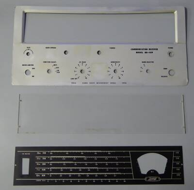
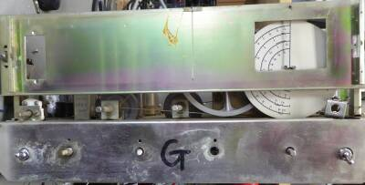
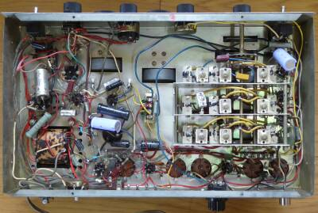
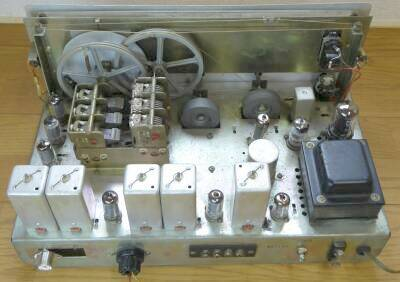

 |
さすがに古いものですから、まずは分解清掃から
フロントパネルが貧弱・・・ペラペラです
実際、大きな窓を開けている下部分には、しわが入っています
この化粧パネルは厚くしてほしかった、です
メータのサイズ違いからできる隙間を埋める黒シートの加工は、この時点で行います |
 |
フロントパネル・ダイヤルスケールを外したフロントシャーシの様子
糸掛けダイヤルの緩みについても、この時点で修正します |
 |
シャーシ下面
追加した電解コンデンサが写っています
容量抜けがあるのと、ドリフトが気になる
今回はスタビロ、もしくはＺＤを使っての中圧の定電圧化までは行いませんでした（その効果は十分ありそうです）
ＩＦ段のバイパスコンデンサなどはＯＩＬコンです
セラミックコンデンサに変えたいところ
ＡＦ段の結合コンデンサ/OILコンは、一つ交換しました（絶縁不良）
|
 |
シャーシ上面 リア側より
受信信号は、左上から下へ、そして右に進んで上に流れる構成です
電源トランスの上に見えるＧＴ管が整流管 ５Ｙ３です
ＡＮＴ入力は、Ｍ型のレセプタクルを追加しました
ヒューズホルダについては、ヒューズむき出しです！ |
|
ここのところ触ったギアで、最も手を取られたもののひとつです
１９６２年５月ＣＱ誌にある回路図だけが頼りでした
多分ですが、この入手した受信機は一度も正常には動作していない、と思われます
ＲＦ／ＩＦに採用の真空管、本来６ＢＡ６なのですが、すべて６ＣＢ６が刺さっていました
この２つの真空管、カソードＰｉｎと、サプレッサ・グリッドＰｉｎが反対です
サプレッサピンを直流的に浮かすとどうなるか・・・発振します（ＢＦＯの代わりに、この手が使われた一例：ＳＸ-１４０）
電源を入れ、ＲＦゲイン調整ツマミを回すと、見事発振します
ＩＦ段プレートとＩＦＴの接続が出来ていない箇所が一か所ありました
これでは受信できません
刺さっていた真空管の劣化が激しい・・・放送局が電電公社から出てきた廃棄品を使った可能性が高い
キットを組み立てたものでした
中古品の入手において、一度はきちんと動作したもの…完成品が一番でしょうが、元キットの入手時には注意が必要ということを改めて思い知らされた一件でした（いい勉強、頭の体操にはなります！）
全部分解して最初から組み立てるまでの元気もなかったので、今回は対処療法の範囲にとどめました
Ｓメータは、非純正の横スケールのものが縦に付いていたので、縦スケールの９Ｒ５９のメーターに交換しました（サイズが一回り小さいので、周囲に黒のシートを貼ることで隙間を隠しています）
メーター感度がオリジナルのものより高いので、シャント抵抗を入れました
細かいことを言えば、シャーシをひねると受信感度（Ｓ/Ｎ）が変わるなど、鉄シャーシを使った無線機にあるトラブルは全部持っていました
各種調整後、実際に稼働をさせてみて、
結論は、短波放送の受信に適しています
選択度も適当で、得られる音質も含めＡＭ放送受信に向いています
なかなかの感度ではあります
スペックは、１０ＭＨｚ ３μV S/N=２０ｄｂ
以下、３μVの信号を受信したときの実測値
| |
１KHz３０％変調ON/OFF |
| ３．５MHｚ |
２０ｄｂ |
| ７MHｚ |
１９ｄｂ |
| １４MHｚ |
２０ｄｂ |
| ２１MHｚ |
１９ｄｂ |
| ２８MHｚ |
１０ｄｂ |
【参考】１４MHｚ １μV入力時 S/N=１３ｄｂ
今のアマチュア無線向きには？？？
ＳＳＢ受信をしようとしたら、スプレッドダイヤルと、ＢＦＯツマミの両方の手が離せない状態になります
本来固定であるはずのＢＦＯツマミでもって、細かい受信周波数を変えるイメージです（選択度が良くありません）
７／１４MHｚ帯にて、SSBの受信ができるところまでの確認はしました
ＣＷ／ＳＳＢモード時は、ＡＧＣはＯＦＦが当たり前 プロダクト検波なしですから、かなりＩＦ／ＲＦゲインを絞ってやらないとまともな復調はできません
それでもＳＳＢ受信においては、Ｓ/Ｎが良くありませんが、これはこの時代の設計にあっては仕方ないことなのでしょう |